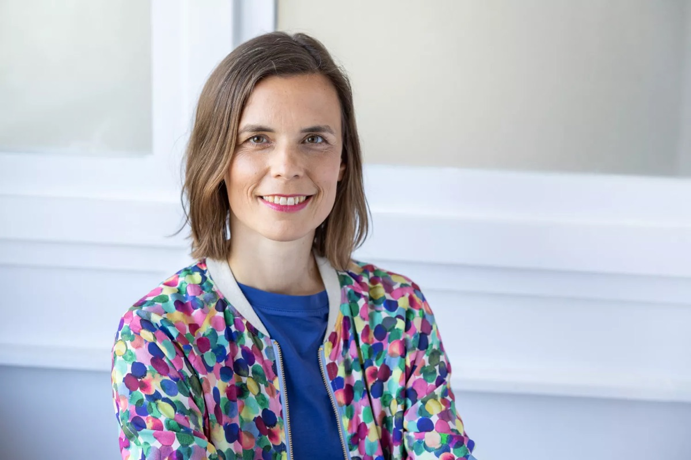
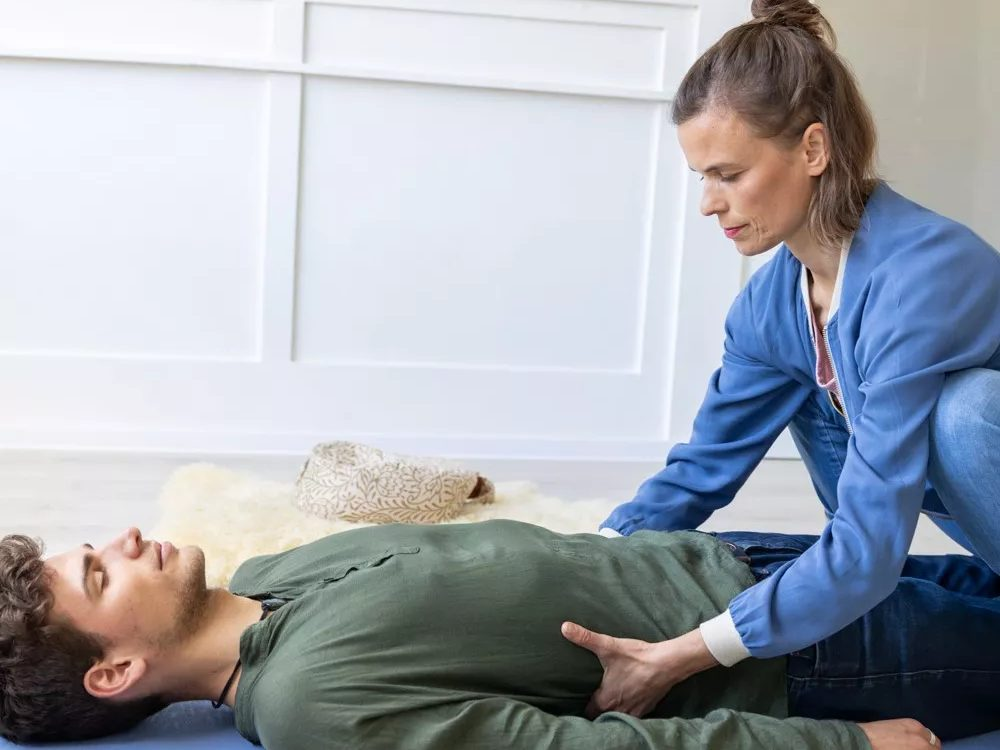
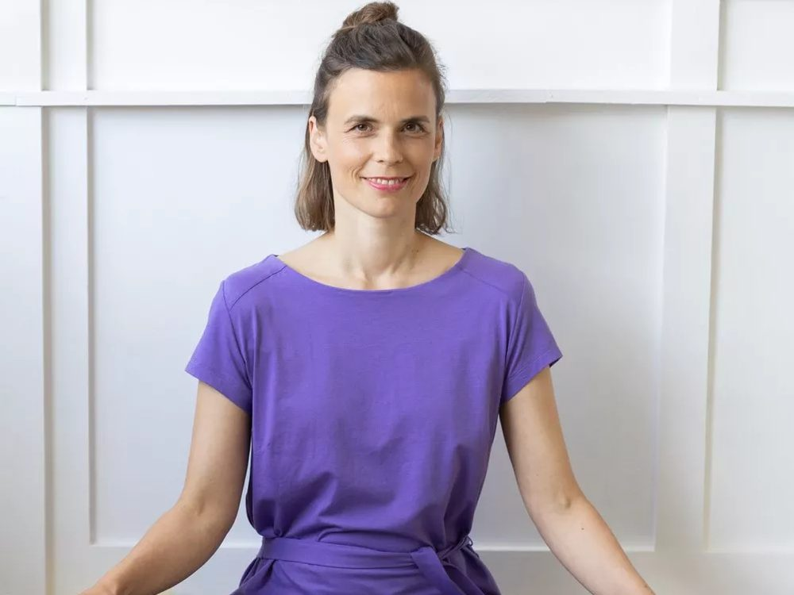
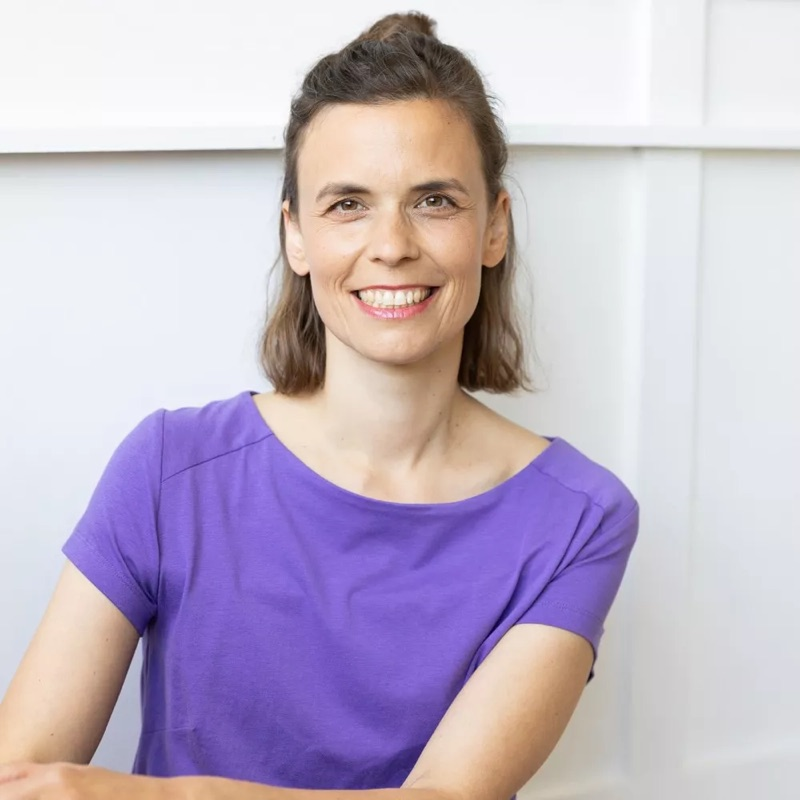
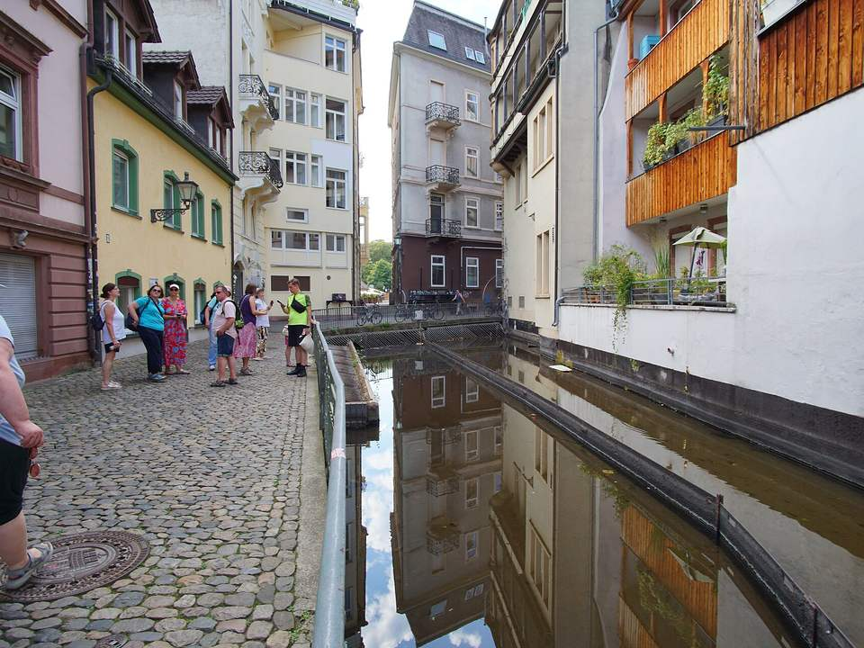

Familienaufstellung
Wir gehen an die Wurzeln dessen, was dich heute belastet, und schaffen einen neuen Boden für deine Beziehungen — einzeln, in der Gruppe oder online.
Einzel · Gruppe · KurzaufstellungIch begleite dich mit systemischer Aufstellungsarbeit, Atem und Stimme — damit sich lösen darf, was dich hält. Geerdet, herzlich und mit über 20 Jahren Erfahrung. In Freiburg und online.
Lieber direkt? 0152 5819 5612

Manchmal spürst du, dass es so nicht weitergeht — kannst aber nicht greifen, woran es liegt. Genau da setzen wir an.
„Ich fühle mich festgefahren."
Stress, innere Unruhe, das Gefühl, im eigenen Leben nicht voranzukommen.„In meiner Familie wiederholt sich etwas."
Belastende Muster in Familie, Partnerschaft oder über Generationen hinweg.„Ich komme nicht zur Ruhe."
Angst, Panik, Erschöpfung, Schlafprobleme — dein Nervensystem ist im Dauerlauf.„Etwas Schweres liegt mir nach."
Unverarbeitete Erlebnisse, Trauer, ein Verlust, der noch nicht losgelassen ist.„Meine Stimme trägt nicht mehr."
Heiserkeit, Stimmprobleme, der Wunsch, wieder frei und kraftvoll zu sprechen.„Ich möchte mich entwickeln."
Klarheit, Selbstfürsorge, innerer Frieden — und wieder ganz bei dir ankommen.Du erkennst dich wieder? Dann lass uns in einem kostenfreien Gespräch schauen, was dir guttut. Schreib mir →
„Entwicklung heißt nicht, dass du etwas dazulernen musst. Ent-Wicklung heißt, dass etwas von dir abfallen darf, das dich bislang daran gehindert hat, das zu sein, was du schon immer bist."Stephanie Diehl
Körperorientiert und systemisch — was zu dir passt, finden wir gemeinsam heraus. Oft greift eines ins andere.
Wir gehen an die Wurzeln dessen, was dich heute belastet, und schaffen einen neuen Boden für deine Beziehungen — einzeln, in der Gruppe oder online.
Einzel · Gruppe · Kurzaufstellung
„Die Atmung ist die älteste Medizin der Menschheit." Über den bewussten Atem dein Nervensystem regulieren und Stress lösen — im sicheren Rahmen, begleitet.
Transformativer Atem · funktionale Atemtherapie
Über 20 Jahre Erfahrung mit funktionellen, organischen und psychogenen Stimmstörungen — ganzheitlich, weil Atem, Körper und Stimme zusammengehören.
funktionale & manuelle StimmtherapieFür Gruppen, Fachpublikum und alle, die regelmäßig dranbleiben möchten.

Seit über zwanzig Jahren arbeite ich mit Menschen und ihren Stimmen — als Logopädin am UniversitätsSpital Zürich und in Heidelberg. Auf diesem Weg habe ich gelernt, wie eng Atem, Körper und Seele zusammenhängen.
Daraus ist meine Praxis in der Freiburger Altstadt entstanden: ein Ort, an dem klinisches Fundament und körperorientierte, systemische Begleitung zusammenkommen. Ich bin überzeugt, dass du bereits alles in dir trägst, was du für ein gutes Leben brauchst — manchmal braucht es nur jemanden, der mit dir hinschaut.
Neben der Praxis bin ich Partnerin, Mutter, Freundin und Mitmensch — und begegne dir genau so: auf Augenhöhe.
Du schreibst oder rufst an. In einem kostenfreien Gespräch schauen wir, worum es geht und ob es zwischen uns passt.
Wir finden heraus, was dir guttut — Aufstellung, Atem, Stimme oder eine Verbindung daraus. In deinem Tempo, in sicherem Rahmen.
Ob ein einzelner Prozess oder eine längere Begleitung — du entscheidest, wie es weitergeht. In Freiburg, in der Natur oder online.
„Ich kenne Stephanie als eine herzenswarme Persönlichkeit, die einen sicheren Raum schafft, in dem wirklich etwas in Bewegung kommen darf."
— Marlene Z.
„Der Atemprozess hat mir geholfen, an etwas heranzukommen, das ich mit Worten nie erreicht hätte. Ich fühlte mich die ganze Zeit gehalten."
— Sabine W. · Breathwork
„Fachlich fundiert und gleichzeitig zutiefst menschlich — eine seltene Kombination, die man sofort spürt."
— Roland R.
Auch im Einsatz für Teams: Atem- & Stimm-Seminare u. a. für Endress + Hauser und das Landratsamt Emmendingen.
Wir telefonieren oder schreiben kurz. Du erzählst, was dich bewegt, ich höre zu, und wir spüren gemeinsam, ob und wie ich dich begleiten kann. Ganz ohne Verpflichtung.
Gesetzlich Versicherte sind bei mir grundsätzlich Selbstzahler. Privat- oder Zusatzversicherte klären die Kostenübernahme bitte vorab mit ihrer Versicherung. Die genauen Konditionen besprechen wir offen.
Mit Bodenankern oder Stellvertreter:innen machen wir sichtbar, was zwischen den Menschen deines Systems wirkt. So entsteht ein neuer Blick auf alte Muster — und Raum für Lösung.
Für die meisten ja. Bei bestimmten Vorerkrankungen (z. B. Herz-Kreislauf, Epilepsie, Schwangerschaft, bestimmte psychische Erkrankungen) ist transformatives Atmen nicht geeignet — das klären wir immer vorher gemeinsam, deine Sicherheit geht vor.
Vieles ja — Aufstellungen, funktionale Atemtherapie und Stimmarbeit lassen sich gut online begleiten. Manches entfaltet sich vor Ort in Freiburg am schönsten. Wir finden den passenden Weg.
Nein. Meine Begleitung ersetzt keinen Arztbesuch und keine medizinische Behandlung. Bei Stimmstörungen empfehle ich vorab eine phoniatrische Abklärung.
In einer akuten Krise bist du nicht allein. Notruf 112 · Telefonseelsorge 0800 111 0 111 (kostenlos, rund um die Uhr).
Mitten in der Altstadt, im ruhigen Hinterhaus am Wasser. Ein geschützter Ort zum Ankommen — gut zu Fuß und mit Bahn/Bus erreichbar.
Route öffnen →